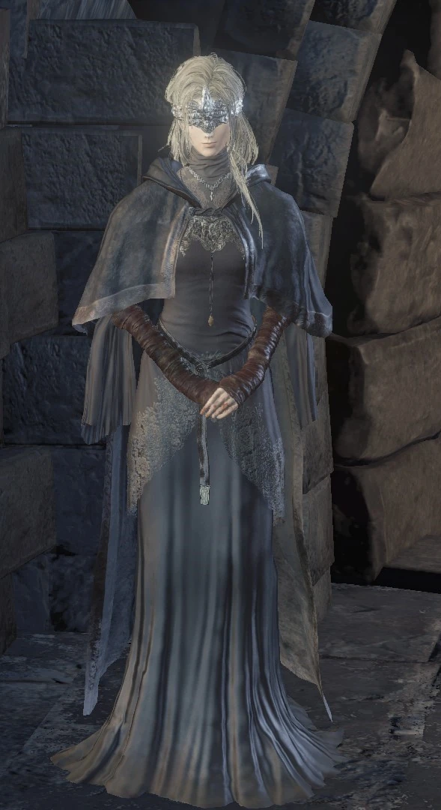
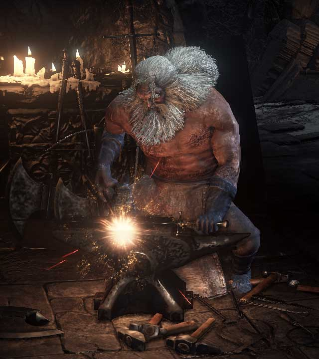
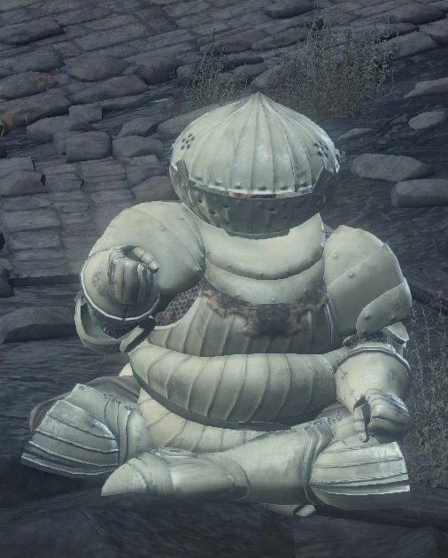
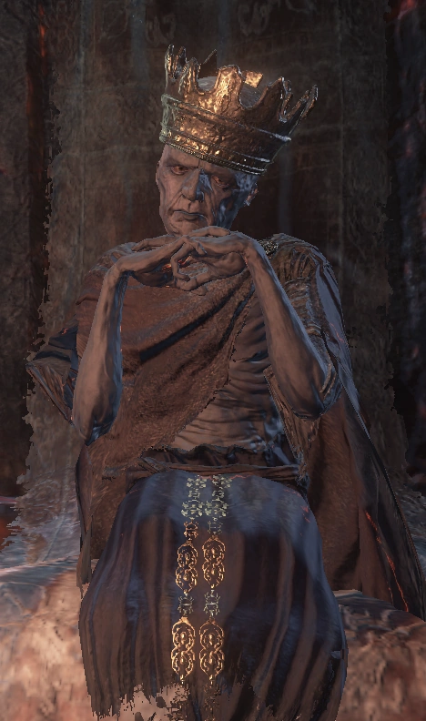
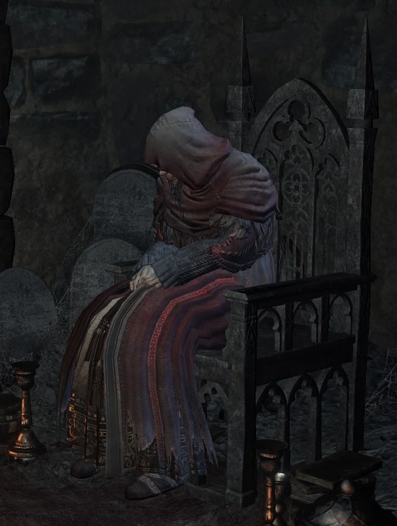

Ashen One
El protagonista de Dark Souls III. Un No Muerto de Ceniza resucitado con la misión de encontrar a los Señores de la Ceniza y decidir el destino de la Primera Llama.

El protagonista de Dark Souls III. Un No Muerto de Ceniza resucitado con la misión de encontrar a los Señores de la Ceniza y decidir el destino de la Primera Llama.
La guardiana del Santuario de Enlace de Fuego. Ayuda al jugador durante toda la aventura permitiéndole aumentar su poder y guiándolo en un mundo consumido por la oscuridad.

El herrero del Santuario de Enlace de Fuego. Se encarga de mejorar armas y equipamiento del jugador, siendo uno de los personajes más reconocidos de la saga.

Un caballero honorable y amigable que acompaña al jugador en distintos momentos de la aventura. Es recordado por su valentía y su fuerte sentido del deber.

El único Señor de la Ceniza que permanece voluntariamente en su trono. Posee un profundo conocimiento sobre el fuego, las almas y el ciclo que domina al mundo.

La comerciante principal del Santuario de Enlace de Fuego. Proporciona objetos esenciales y conocimientos sobre el mundo del juego.

Un ladrón proveniente del Asentamiento de los No Muertos que se convierte en aliado del jugador a lo largo de la aventura. A pesar de su apariencia y pasado como criminal, Greirat demuestra ser leal y valiente, realizando peligrosas expediciones para conseguir objetos y equipamiento. Su historia es una de las más trágicas y recordadas de Dark Souls III.

Una joven sacerdotisa ciega encontrada prisionera en el Camino de los Sacrificios. Irina puede enseñarle milagros sagrados al jugador y representa la lucha entre la luz y la oscuridad dentro del mundo de Dark Souls III.